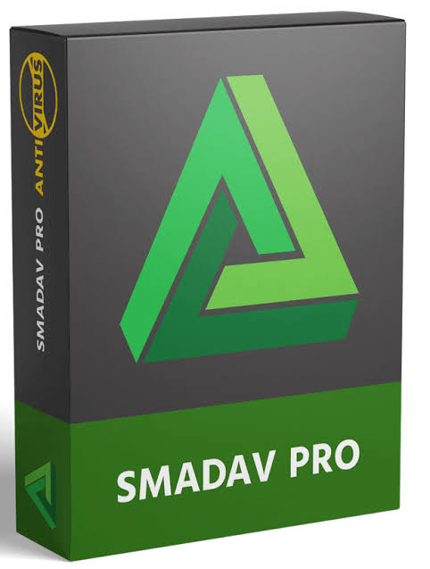
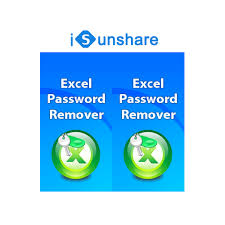

SOFT-KIT SOFTWARE

Ativator2.3
Download zip file
Download Windows 7 activator 2.3
Windows Loader is a tool that is used to activate windows 7 for free without buying any keys to get activated with win7. By default, if you download Windows ... Updated: 1 Day Ago Size: 2.39 MB Installed: 100,000,0+
.jpeg)
Firefox 73.0.1
Download zip file
Download Firefox Setup 73.0.1
Mozilla Firefox is a free open-source browser whose development is overseen by the Mozilla Corporation. ... First released in November 2004, Firefox is completely customizable with themes, plug-ins, and add-ons. Firefox uses Gecko to render webpages, and implements both current and upcoming Web standards.16 Nov 2020

Download zip file
Smadav2021
Download zip file
Download smadav2021rev1462
17 Jan 2021 — Download Smadav for Windows PC from Softkit. 100% Safe and Secure ✓ Free Download (32-bit/64-bit) Latest Version 2021. Rating: 8/10 · 2,226 votes · Free · Windows
Intel_GraphicsDriver_Win7
Download zip file
Download Intel_GraphicsDriver_Win7_MR1_Version_38_15_0_1125.part01
4 days ago — The Intel HD Graphics (Family) is a processor graphics card which is integrated in the cheap Celeron and Pentium model of the Sandy Bridge ... Core Speed: 350 - 1100 (Boost) MHz DirectX: DirectX 10.1, Shader 4.1 Memory Bus Width: 64/128 Bit Technology: 32 nm
winrar602
Download software
Download winrar602
WinRAR is a trialware file archiver utility for Windows, developed by Eugene Roshal of win. ... It can create and view archives in RAR or ZIP file formats, and unpack numerous archive file formats. To enable the user to test the integrity of archives, WinRAR embeds CRC32 or BLAKE2 checksums for each file in each archive.
SublimeText3211
Download zip file
Download SublimeText3211Setup
Sublime Text is a commercial source code editor. It natively supports many programming languages and markup languages. Users can expand its functionality with plugins, typically community-built and maintained under free-software licenses. To facilitate plugins, Sublime Text features a Python API. Developer(s): Sublime HQ Operating system: Linux, macOS, Windows
vlc-3.0.16-win32
Download zip file
Download vlc-3.0.16-win32.
VLC is a free and open source cross-platform multimedia player and framework that plays most multimedia files as well as DVDs, Audio CDs, VCDs, and various streaming protocols. VLC is a free and open source cross-platform multimedia player and framework that plays most multimedia files, and various streaming protocols.

VSCodeSetup
Download zip file
Download VSCodeSetup-ia32-1.58.1
Visual Studio Code is a lightweight but powerful source code editor which runs on your desktop and is available for Windows, macOS and Linux. It comes with built-in support for JavaScript, TypeScript and Node

Download software
isunshare-android-password-genius
Download software
Download isunshare-android-password-genius